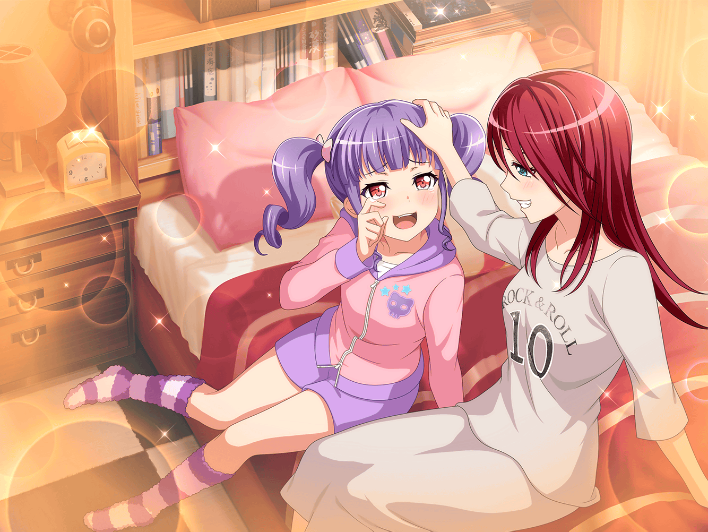

CiRCLE スタジオ
あこ
う〜〜〜ん
燐子
どうしたの、あこちゃん……？
あこ
なんかあこ……ちょっと調子が悪いみたいなんだ～。
思った通りにドラムの音が出ないなんてどうしちゃったのかな〜
燐子
あ、あこちゃん……
リサ
え？ 紗夜がスランプを抜けたと思ったら、今度はあこ〜？
あこ
うう、スランプってうつるのかな〜？？
ねー、リサ姉……どーしたらいい……？
リサ
どーしたらって……そんなに暗い顔しないの。
ほら、余ったクッキーあげるから、元気だしなよ☆
あこ
やった！ クッキーだ！ 食べる食べる〜！
あこ
もぐもぐ……
ん〜、おいし〜！ リサ姉のクッキーはやっぱり世界一だよ〜！
リサ
なんだ、けっこう元気じゃん！
よかったよかった〜♪
あこ
ええっ！？ 違う違う！ 全然よくないよ〜！
あこ、ほんとに悩んでるんだから〜〜！
燐子
あ、あこちゃん……
わ、わたしでよければ……相談にのるよ……？
あこ
ありがとー、りんりん！
燐子
それで、どうしたの……？
あこ
うん。実はね、ドラムの音が弾まないの
あこ
いつもは究極の闇の力が爆発してる感じの、なんかこう……
ドッカーン！ ってぐらいサイコーの音が出るんだけど
あこ
今日はなんだかツノの折れた魔王っていうか、
カッコよくない音しか出ないんだよ〜
燐子
そ、それは心配だね……
リサ
例えはピンとくるようなこないようなって感じだけど……
あこが調子悪そうなのはなんとなく伝わってきたよ
リサ
でもさ、この間の練習の時はバッチリだったよね？
なのに、なんで急に調子が崩れちゃったんだろ？
あこ
うーん……あっ！
もしかしたら……！
燐子
何か、思い当たること……あるの？
あこ
あこ、おねーちゃんを追いかけすぎなのかも……！
リサ
ど、どういうこと……？
あこ
ほら、あこってこう見えてけっこう繊細でしょ？
あこ
だから、おねーちゃんの音を追いかけすぎて、
自分の音を見失っちゃったのかもしれない……！
リサ
うーん、あこが繊細……？
今までもずっと巴を追いかけてたのに急になるかな？
リサ
ね、燐子はどう思う……？
……燐子？ どうしたの？
燐子
……あ、ご、ごめんなさい
そ、その……なんだか気になるものを見つけちゃって……
あこ
気になるもの？
燐子
うん……あこちゃんが調子悪い原因……
わかったかも……しれない……
あこ
えっ？ ほんと！？
燐子
ひょっとすると……これのせいなんじゃないかな……？
あこ
これって、バスドラム……？
あこ
あれ？ 中に何か入って……
あこ・リサ
……ああっ！！
あこ
ええ〜！ 何これ、毛布が入ってる！
あこ、こんなの知らないよ〜！
リサ
たしか、音をミュートさせるために、
ドラムに毛布を入れたりするんだよね……？
リサ
アタシ達の前にこのスタジオを使ったバンドが、
入れっぱなしにして忘れてったのかな？
あこ
うう、ぜ、全然気がつかなかった〜！
あこ
もう！ どこのバンドなの〜！
スタジオを使ったあとは綺麗に片付けるのがルールだよね！
燐子
あこちゃん……毛布を出して……叩いてみたら……？
あこ
そ、そうだね、りんりん！ よ〜し！
あこ
……ふぅ、キマった！
あこ
あ～っ！ これだよ、これ！
あこ、すっごい調子いいかも〜！！
燐子
うん、とってもかっこよかったよ……
リサ
スランプじゃなかったのはいいんだけどさ。
でも、そういうのは練習の前に確認しとこうよぉ～
あこ
えへへ、心配かけちゃって、ごめんなさぁい！
あこ
おねーちゃんのことはやっぱり原因じゃなかったねっ！
よかった〜！ これからもたーくさん、憧れるんだ〜！
リサ
あはは、それでこそあこって感じだね〜
燐子
はい……
何事もなくてよかったね、あこちゃん……